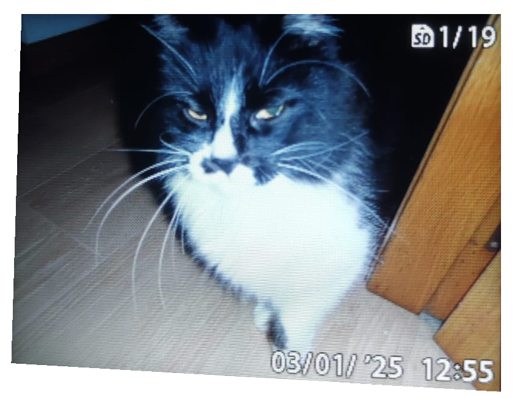

Luis Fuentes González
El Inmortal, Jorge Luis Borges, 1947:
"Pensé que Argos y yo participábamos de universos distintos; pensé que nuestras percepciones eran iguales, pero que Argos las combinaba de otra manera y construía con ellas otros objetos; pensé que acaso no había objetos para él, sino un vertiginoso y continuo juego de impresiones brevísimas. Pensé en un mundo sin memoria, sin tiempo, consideré la posibilidad de un lenguaje que ignorara los sustantivos, un lenguaje de verbos impersonales o de indeclinables epítetos. Así fueron muriendo los días y con los días los años, pero algo parecido a la felicidad ocurrió una mañana.
Llovió, con lentitud poderosa."